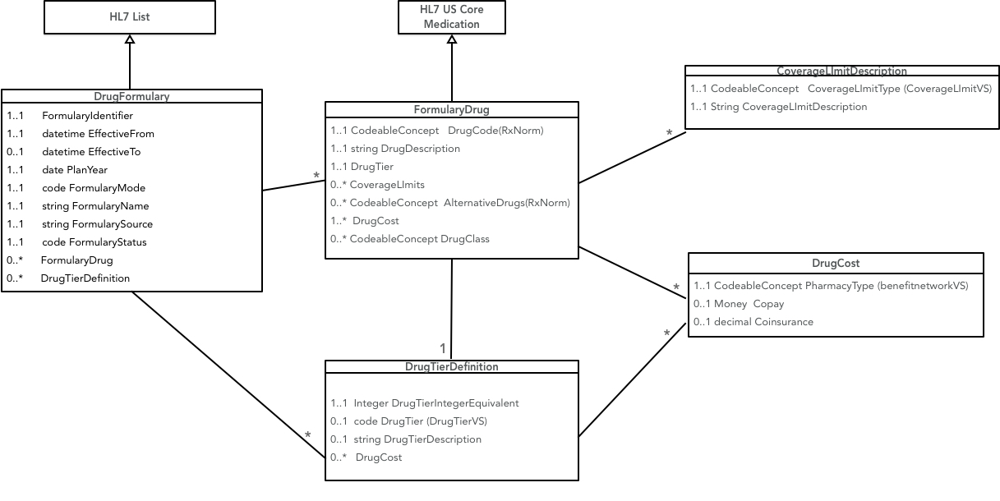

May 1, 2019 - V0.1.1 This is an initial draft version of the US Drug Formularies Health Level 7 (HL7) Fast Healthcare Interoperability Resources (FHIR) profiles, extensions, value sets, and code systems. It is incomplete and subject to change without notice.
This project is a proof-of-concept for a FHIR interface to a payer's drug formulary information. A formulary is a list of prescribable drugs/products published by a health plan, pharmacy benefit manager, payer, or provider. The primary use cases for this FHIR interface are support for applications targeting consumers/patients that will allow them to understand the costs and alternatives for drugs that have been prescribed, and to compare their drug costs across different insurance plans.
Formularies in the United States are normally published by health insurers on an annual basis, with minor annual updates. There are occasional emergency releases of formularies when a new drug is released to the public or an existing drug is removed from coverage.
Insurers regularly administer multiple health plans and each of those plans may have its own formulary.
Each formulary contains a list of drugs, together with limitations on their prescription, alternative drugs, and copay costs. Drugs are placed into tiers that largely determine the cost to the consumer/patient. The number and purpose of drug tiers varies across payers. Tiers are numbered, with low numbered tiers corresponding to low cost to the consumer.
In addition to the drug tier, drugs may also list requirements or limitations (e.g., quantity limits, step therapy requirements, prior authorization requirements, etc.) that patients covered under the health plan should be aware of.
This Implementation Guide is intended for insurers within the United States. Currently, many insurers make their formularies available to patients using PDFs or drug search forms on their websites. Providing formularies using FHIR may allow patients to more easily comparison-shop between plans and could help insurers educate consumers about the differences between various drug tiers/classes.
The FHIR resources in the formulary provide a partial view into the full formulary information model. For the intended use cases including the full complexity of the formulary data model (as expressed in the NCPDP Information Model) would add significant complexity to the FHIR interface, and push business logic into the clients of the interface. A better design keeps the client free of the business logic, and provides operations that resolve the business logic for the client. For example, a drug may have age and gender restrictions that can be resolved once the age and gender of the patient are known. Similarly, cost to the insured may only be known if the insured's benefit status is known, and the identity of the pharmacy filling the prescription is known.
Operations would be required that allow a client to get answers to patient-specific queries. Perhaps two types of operations would be useful. The first would pass the key parameters that drive the formulary business logic as arguments. The second would pass the identity of the patient as a parameter, and the parameters could be determined from patient demographic information that is available to the payer.
This section tracks open issues/questions/concerns about the draft implementation guide and its components. It should be deleted if/when the IG is released.
There is no single, authoritative indentifier that can be associated with a formulary (e.g., like NPI numbers identify providers in the United States). How can unique formulary IDs be provisioned such that they can be implemented consistently by all payers and referenced by other entities (e.g., health plans)? The NCPDP F&B eRx implementation guide requires an identifier for each formulary. Perhaps that can be leveraged. Similarly, how can a client application find the endpoint for a particular formulary? Is a directory of formularies needed?
There aren't many good LOINC or SNOMED codes for administrative health items. This IG may require some new ones:
Formulary profile uses LOINC 82215-5 (Medical equipment or product list) as the Formulary.codeWhile the IG specifies RxNorm as the preferred code system for drugs, there are many ways to represent drug components, drug packs, etc. (see RxNav). This may lead different insurers to map similar drugs to different RxNorm codes. Further guidance may be required on this subject.
Based on brief research, this may be an appropriate way to assign RxNorm codes for drugs in formularies:
| Drugs Distinguished By | Generic | Brand |
|---|---|---|
| Ingredient Only | Ingredient [IN/MIN] | Brand Name [BN] |
| Ingredient and Components/Packaging | Clinical or Drug Pack [SCD/GPCK] | Branded Drug or Pack [SBD/BPCK] |
Practically, the QHP formulary for healthcare.gov asks for every possible SBD/BPCK and SCD/GPCK RxNorm code that could be associated with each covered drug to make sure that users searching for a specific packaging of a drug are able to find it. This may be a more reasonable approach.
Many formularies visually segment their lists of covered drugs using classification categories based on their expected use in patient care (e.g., 'Inflammatory Conditions', 'Sexual Dysfunction', 'Musculoskeletal', etc.).
The WHO maintains the ATC classification code set, which may be useful here. ATC classes may be derived from RxNorm codes (since there is a classification hierarchy included with each RxNorm code), but it will be useful to have these classification codes explicit in the payload. The current draft makes this optional.
There may be alternatives to a particular drug in the formulary. These alternatives could be presented using the drug's classification, but absent a consistent approach in the industry this draft provides alternatives simply as a list of RxNorm codes. These RxNorm codes *must* be also represented in the formulary. Enforcing referential integrity may be tricky.